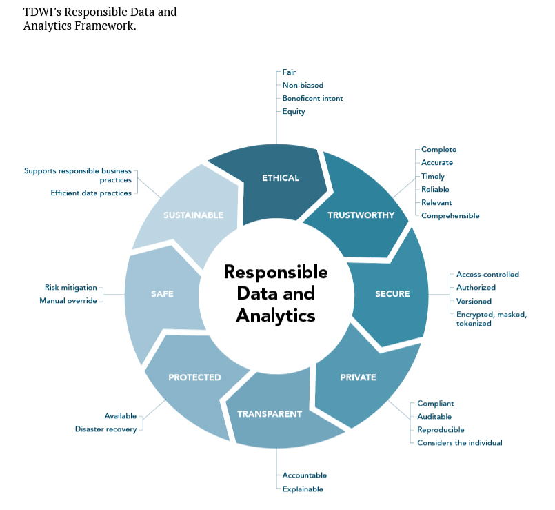
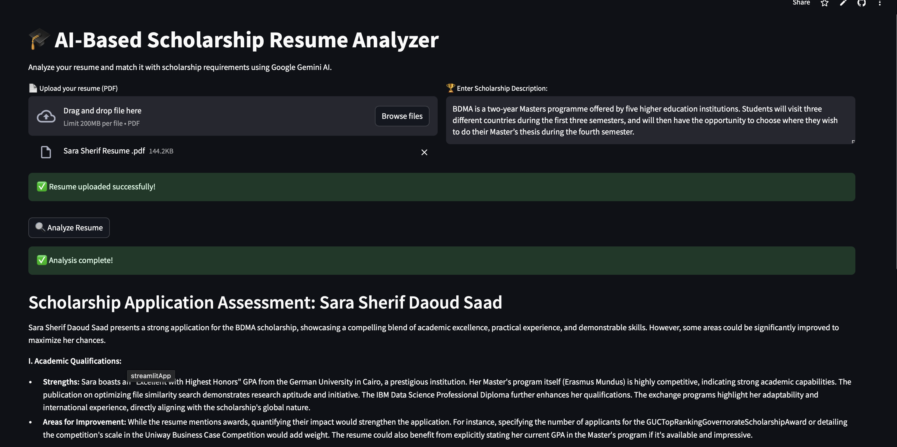

Smart cities generate a massive amount of disparate data from multiple sources, necessitating the use of Data Lakes for efficient storage and management, especially with the advent of Big Data. However, it is critical to use appropriate search techniques and governance to prevent the Data Lake from becoming a data swamp. The Data Lake encompasses a wide range of documents and topics, which makes finding similar datasets, e.g., through schema matching approaches, difficult and computationally intensive.
Key Technologies: Apache Spark, Python, Machine Learning, Big Data Processing
Key Achievements: Implemented and optimized the DS-Prox algorithm, achieving improved accuracy in dataset similarity search


Designed and implemented a graph database system using Neo4j to manage and analyze research publications. Features include advanced analytics, co-authorship and citation networks, and review-based decision modeling. Developed for the Semantic Data Management course at UPC, this project demonstrates expertise in graph data modeling and complex query design.

Comprehensive machine learning pipeline for responsible data science, focusing on fairness and privacy in income prediction. Implements adversarial debiasing, local differential privacy, and explainable AI with SHAP and LLM integration. Developed for the MDSBW course, this project demonstrates ethical and interpretable AI practices.

Analyze your resume and match it with scholarship requirements using Google Gemini AI. Features PDF upload, instant analysis, and personalized feedback for scholarship applications.
Live Demo available!

Interactive sales analytics dashboard providing comprehensive insights into sales performance, profit metrics, and regional analysis. Features year-over-year comparisons and segment-based analysis.

Comprehensive healthcare analytics dashboard for monitoring patient wait times and service efficiency. Includes case type distribution, specialty wait time tracking, and resource utilization metrics.